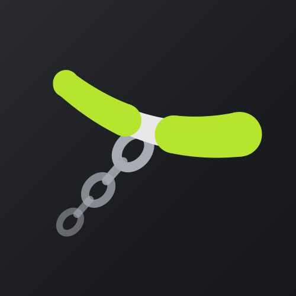

ErgBeatErgBeat – Privacy Policy
Last updated: 9 November 2026
ErgBeat is an app for training on a rowing machine. It is built so that your data stays with you.
What the app stores, and where. Your workouts (time, distance, pace, stroke rate, power, calories, heart rate, per-second samples), your custom workouts, program progress, personal records and settings are stored only on your device, in the app's private storage. They are never sent to us or to anyone else.
No account, no ads, no analytics. ErgBeat has no user accounts, shows no ads and contains no analytics, tracking or advertising SDKs. The app itself does not send any of your data over the internet.
Bluetooth. ErgBeat uses Bluetooth to connect to your rowing machine and to a heart-rate sensor. Bluetooth scanning is used only to find these devices and is not used to determine your location.
Health Connect (optional). If you turn it on, ErgBeat writes each finished workout to Health Connect on your device (exercise session, distance, calories, heart rate and power). ErgBeat does not read any data from Health Connect. You can revoke this at any time in ErgBeat's settings or in Health Connect.
Power sensor (optional). If you turn it on, the phone advertises itself over Bluetooth as a cycling power sensor so that your own watch can record power and stroke rate. Only these two values are sent, only to a device you pair.
Garmin watch (optional). If you use the ErgBeat watch app, the phone sends the live workout (time, distance, pace, stroke rate, power, heart rate and the workout's steps) to your watch through the Garmin Connect app on your phone, over Bluetooth. The watch sends its heart rate back and, when it starts, a short technical note about its previous run (how long it ran, how many messages it exchanged, memory use; no workout data), which the phone keeps only in its Bluetooth log on the device. The watch records the workout as an activity, which Garmin Connect syncs to your Garmin account under Garmin's privacy policy. ErgBeat itself sends nothing to Garmin's servers.
Camera (optional). Only when you tap "Scan QR code" to import a shared workout. The image is decoded on the device and never stored or sent anywhere. Shared workouts (QR code or link) contain only the workout itself, no personal data, and need no account or server.
Feedback and error reports. "Send feedback" opens your own mail or share app with device details (app version, Android version, phone model) and the Bluetooth log attached. If ErgBeat closes because of an error, the technical details of that error (no workout data) are kept on your device, and at the next start the app asks whether to send them the same way. Nothing is sent unless you send it, and you see the whole message first.
Backups. Android's own backup can save ErgBeat's data (your workouts, your own workouts, program progress, records and settings) to your Google account and put it back on a new phone; you manage it in Android's settings. If you turn on Automatic backup in ErgBeat, the app writes one backup file to a place you pick with Android's file picker (for example Google Drive) after every workout. The app that holds that place uploads the file under its own privacy policy; ErgBeat itself does not connect to the internet.
Reminders. Training reminders are scheduled and shown locally on the device.
Exports you share. When you export a workout (FIT or CSV), the file is created on your device and handed to the app you choose in the Android share sheet (for example Garmin Connect or Strava). What happens to it there is governed by that app's privacy policy.
Purchases. ErgBeat Pro is sold through Google Play. Payments are processed by Google; we do not receive or store your payment details. The app only asks Google Play whether this Google account owns ErgBeat Pro.
Deleting your data. You can delete individual workouts in the app. Uninstalling the app, or clearing its storage in Android settings, removes all of its data from your device.
Children. ErgBeat is not directed at children under 13.
Contact. Questions about this policy or the app: jaan.dsgn@gmail.com
ErgBeat – Pravila privatnosti
Zadnja izmjena: 9. studenoga 2026.
ErgBeat je aplikacija za trening na veslačkom ergometru, napravljena tako da tvoji podaci ostaju kod tebe.
Što aplikacija sprema i gdje. Treninzi (vrijeme, udaljenost, tempo, tempo zaveslaja, snaga, kalorije, puls, uzorci po sekundi), vlastiti treninzi, napredak u programima, osobni rekordi i postavke spremaju se samo na tvom uređaju, u privatnoj memoriji aplikacije. Nikad se ne šalju nama ni bilo kome drugome.
Bez računa, oglasa i analitike. ErgBeat nema korisničke račune, ne prikazuje oglase i ne sadrži analitiku, praćenje ni reklamne SDK-ove. Aplikacija sama ne šalje tvoje podatke preko interneta.
Bluetooth. ErgBeat koristi Bluetooth za spajanje na veslač i senzor pulsa. Skeniranje se koristi samo za pronalazak tih uređaja, ne za određivanje lokacije.
Health Connect (po želji). Ako ga uključiš, ErgBeat svaki završeni trening upisuje u Health Connect na tvom uređaju (trening, udaljenost, kalorije, puls i snaga). ErgBeat ne čita nikakve podatke iz Health Connecta. To možeš ukinuti bilo kada u postavkama ErgBeata ili u Health Connectu.
Senzor snage (po želji). Ako ga uključiš, mobitel se preko Bluetootha oglašava kao senzor snage za bicikl kako bi tvoj sat mogao snimati snagu i tempo zaveslaja. Šalju se samo te dvije vrijednosti, samo uređaju koji upariš.
Garmin sat (po želji). Ako koristiš ErgBeat aplikaciju na satu, mobitel tvom satu šalje trening uživo (vrijeme, udaljenost, tempo, tempo zaveslaja, snagu, puls i korake treninga) preko aplikacije Garmin Connect na mobitelu, Bluetoothom. Sat mobitelu vraća svoj puls, a pri pokretanju i kratku tehničku bilješku o prošlom radu (koliko je radio, koliko je poruka razmijenio, korištenje memorije; bez podataka o treningu), koju mobitel čuva samo u svom Bluetooth dnevniku na uređaju. Sat snima trening kao aktivnost, a Garmin Connect je sinkronizira s tvojim Garmin računom prema Garminovim pravilima privatnosti. ErgBeat sam ništa ne šalje Garminovim serverima.
Kamera (po želji). Samo kad dodirneš "Skeniraj QR kod" za uvoz podijeljenog treninga. Slika se obrađuje na uređaju i nigdje se ne sprema ni šalje. Podijeljeni treninzi (QR kod ili link) sadrže samo sam trening, bez osobnih podataka, i ne trebaju račun ni server.
Povratne informacije i izvještaji o greškama. "Pošalji povratnu informaciju" otvara tvoju aplikaciju za e-poštu ili dijeljenje s podacima o uređaju (verzija aplikacije, verzija Androida, model mobitela) i priloženim Bluetooth dnevnikom. Ako se ErgBeat zatvori zbog greške, tehnički detalji te greške (bez podataka o treninzima) čuvaju se na uređaju, a pri sljedećem pokretanju aplikacija pita želiš li ih poslati na isti način. Ništa se ne šalje dok to sam ne pošalješ, a cijelu poruku vidiš prije slanja.
Sigurnosne kopije. Androidova vlastita sigurnosna kopija može spremiti podatke ErgBeata (treninge, vlastite treninge, napredak u programima, rekorde i postavke) na tvoj Google račun i vratiti ih na novom mobitelu; time upravljaš u postavkama Androida. Ako u ErgBeatu uključiš Automatsku kopiju, aplikacija nakon svakog treninga zapisuje jednu datoteku s kopijom na mjesto koje odabereš Androidovim biračem datoteka (npr. Google Drive). Aplikacija kojoj to mjesto pripada prenosi datoteku prema svojim pravilima privatnosti; ErgBeat sam se ne spaja na internet.
Podsjetnici. Podsjetnici na trening zakazuju se i prikazuju lokalno na uređaju.
Izvoz koji dijeliš. Kad izvezeš trening (FIT ili CSV), datoteka nastaje na tvom uređaju i predaje se aplikaciji koju odabereš (npr. Garmin Connect ili Strava). Za daljnje postupanje vrijede pravila te aplikacije.
Kupnje. ErgBeat Pro prodaje se preko Google Playa. Plaćanje obrađuje Google; mi ne primamo niti spremamo podatke o plaćanju. Aplikacija samo pita Google Play posjeduje li ovaj Google račun ErgBeat Pro.
Brisanje podataka. Pojedinačne treninge možeš obrisati u aplikaciji. Deinstalacija aplikacije ili brisanje njezine pohrane u postavkama Androida uklanja sve njezine podatke s uređaja.
Djeca. ErgBeat nije namijenjen djeci mlađoj od 13 godina.
Kontakt. Pitanja o ovim pravilima ili aplikaciji: jaan.dsgn@gmail.com
ErgBeat – Datenschutzerklärung
Zuletzt aktualisiert: 9. November 2026
Dies ist eine Übersetzung. Bei Abweichungen gilt die englische Fassung.
ErgBeat ist eine App für das Training auf einem Rudergerät. Sie ist so gebaut, dass deine Daten bei dir bleiben.
Was die App speichert und wo. Deine Workouts (Zeit, Distanz, Tempo, Schlagfrequenz, Leistung, Kalorien, Herzfrequenz, sekündliche Messwerte), deine eigenen Workouts, dein Fortschritt in Trainingsplänen, persönliche Rekorde und Einstellungen werden nur auf deinem Gerät gespeichert, im privaten Speicher der App. Sie werden nie an uns oder an jemand anderen gesendet.
Kein Konto, keine Werbung, keine Analyse. ErgBeat hat keine Benutzerkonten, zeigt keine Werbung und enthält keine Analyse-, Tracking- oder Werbe-SDKs. Die App selbst sendet keine deiner Daten über das Internet.
Bluetooth. ErgBeat nutzt Bluetooth, um sich mit deinem Rudergerät und einem Herzfrequenzsensor zu verbinden. Die Bluetooth-Suche dient nur dazu, diese Geräte zu finden, und wird nicht zur Bestimmung deines Standorts verwendet.
Health Connect (optional). Wenn du es einschaltest, schreibt ErgBeat jedes beendete Workout in Health Connect auf deinem Gerät (Trainingseinheit, Distanz, Kalorien, Herzfrequenz und Leistung). ErgBeat liest keine Daten aus Health Connect. Du kannst das jederzeit in den Einstellungen von ErgBeat oder in Health Connect widerrufen.
Leistungssensor (optional). Wenn du ihn einschaltest, gibt sich das Handy per Bluetooth als Rad-Leistungssensor aus, damit deine eigene Uhr Leistung und Schlagfrequenz aufzeichnen kann. Nur diese beiden Werte werden gesendet, nur an ein Gerät, das du koppelst.
Garmin-Uhr (optional). Wenn du die ErgBeat-Uhren-App nutzt, sendet das Handy das laufende Workout (Zeit, Distanz, Tempo, Schlagfrequenz, Leistung, Herzfrequenz und die Schritte des Workouts) über die Garmin-Connect-App auf deinem Handy per Bluetooth an deine Uhr. Die Uhr sendet ihre Herzfrequenz zurück und beim Start eine kurze technische Notiz über ihren letzten Lauf (Laufzeit, Zahl der ausgetauschten Nachrichten, Speichernutzung; keine Workoutdaten), die das Handy nur in seinem Bluetooth-Protokoll auf dem Gerät aufbewahrt. Die Uhr zeichnet das Workout als Aktivität auf, die Garmin Connect nach Garmins Datenschutzerklärung mit deinem Garmin-Konto synchronisiert. ErgBeat selbst sendet nichts an Garmins Server.
Kamera (optional). Nur wenn du „QR-Code scannen“ tippst, um ein geteiltes Workout zu importieren. Das Bild wird auf dem Gerät ausgewertet und nirgends gespeichert oder gesendet. Geteilte Workouts (QR-Code oder Link) enthalten nur das Workout selbst, keine persönlichen Daten, und brauchen kein Konto und keinen Server.
Feedback und Fehlerberichte. „Feedback senden“ öffnet deine eigene Mail- oder Teilen-App mit Gerätedaten (App-Version, Android-Version, Handymodell) und dem Bluetooth-Protokoll im Anhang. Wenn ErgBeat wegen eines Fehlers schließt, bleiben die technischen Details dieses Fehlers (keine Workoutdaten) auf deinem Gerät, und beim nächsten Start fragt die App, ob du sie auf demselben Weg senden möchtest. Nichts wird gesendet, wenn du es nicht selbst sendest, und du siehst die ganze Nachricht vorher.
Sicherungen. Die eigene Sicherung von Android kann die Daten von ErgBeat (deine Workouts, deine eigenen Workouts, Fortschritt in Trainingsplänen, Rekorde und Einstellungen) in deinem Google-Konto sichern und auf einem neuen Handy wiederherstellen; das verwaltest du in den Android-Einstellungen. Wenn du in ErgBeat die Automatische Sicherung einschaltest, schreibt die App nach jedem Workout eine Sicherungsdatei an einen Ort, den du mit der Dateiauswahl von Android wählst (zum Beispiel Google Drive). Die App, zu der dieser Ort gehört, lädt die Datei nach ihrer eigenen Datenschutzerklärung hoch; ErgBeat selbst verbindet sich nicht mit dem Internet.
Erinnerungen. Trainingserinnerungen werden lokal auf dem Gerät geplant und angezeigt.
Exporte, die du teilst. Wenn du ein Workout exportierst (FIT oder CSV), entsteht die Datei auf deinem Gerät und wird an die App übergeben, die du im Teilen-Menü von Android wählst (zum Beispiel Garmin Connect oder Strava). Was dort damit geschieht, regelt die Datenschutzerklärung dieser App.
Käufe. ErgBeat Pro wird über Google Play verkauft. Zahlungen wickelt Google ab; wir erhalten oder speichern keine Zahlungsdaten. Die App fragt Google Play nur, ob dieses Google-Konto ErgBeat Pro besitzt.
Löschen deiner Daten. Einzelne Workouts kannst du in der App löschen. Das Deinstallieren der App oder das Löschen ihres Speichers in den Android-Einstellungen entfernt alle ihre Daten von deinem Gerät.
Kinder. ErgBeat richtet sich nicht an Kinder unter 13 Jahren.
Kontakt. Fragen zu dieser Erklärung oder zur App: jaan.dsgn@gmail.com
ErgBeat – Política de privacidad
Última actualización: 9 de noviembre de 2026
Esta es una traducción. Si hay diferencias, prevalece la versión en inglés.
ErgBeat es una app para entrenar en una máquina de remo. Está hecha para que tus datos se queden contigo.
Qué guarda la app y dónde. Tus entrenamientos (tiempo, distancia, ritmo, paladas por minuto, potencia, calorías, frecuencia cardiaca, muestras por segundo), tus entrenamientos propios, el progreso en los planes, tus récords personales y los ajustes se guardan solo en tu dispositivo, en el almacenamiento privado de la app. Nunca se envían a nosotros ni a nadie más.
Sin cuenta, sin anuncios, sin analítica. ErgBeat no tiene cuentas de usuario, no muestra anuncios y no contiene SDK de analítica, seguimiento ni publicidad. La app no envía ninguno de tus datos por internet.
Bluetooth. ErgBeat usa Bluetooth para conectarse a tu máquina de remo y a un sensor de frecuencia cardiaca. La búsqueda Bluetooth sirve solo para encontrar esos dispositivos y no se usa para determinar tu ubicación.
Health Connect (opcional). Si lo activas, ErgBeat escribe cada entrenamiento terminado en Health Connect en tu dispositivo (sesión de ejercicio, distancia, calorías, frecuencia cardiaca y potencia). ErgBeat no lee ningún dato de Health Connect. Puedes revocarlo en cualquier momento en los ajustes de ErgBeat o en Health Connect.
Sensor de potencia (opcional). Si lo activas, el móvil se anuncia por Bluetooth como sensor de potencia de ciclismo para que tu propio reloj pueda registrar la potencia y las paladas por minuto. Solo se envían esos dos valores, y solo a un dispositivo que emparejes.
Reloj Garmin (opcional). Si usas la app ErgBeat para reloj, el móvil envía el entrenamiento en directo (tiempo, distancia, ritmo, paladas por minuto, potencia, frecuencia cardiaca y los pasos del entrenamiento) a tu reloj a través de la app Garmin Connect de tu móvil, por Bluetooth. El reloj devuelve su frecuencia cardiaca y, al arrancar, una breve nota técnica sobre su uso anterior (cuánto tiempo funcionó, cuántos mensajes intercambió, uso de memoria; sin datos del entrenamiento), que el móvil guarda solo en su registro de Bluetooth en el dispositivo. El reloj graba el entrenamiento como actividad, que Garmin Connect sincroniza con tu cuenta de Garmin según la política de privacidad de Garmin. ErgBeat no envía nada a los servidores de Garmin.
Cámara (opcional). Solo cuando tocas «Escanear código QR» para importar un entrenamiento compartido. La imagen se procesa en el dispositivo y nunca se guarda ni se envía. Los entrenamientos compartidos (código QR o enlace) solo contienen el entrenamiento, sin datos personales, y no necesitan cuenta ni servidor.
Comentarios e informes de errores. «Enviar comentarios» abre tu propia app de correo o de compartir con datos del dispositivo (versión de la app, versión de Android, modelo del móvil) y el registro de Bluetooth adjunto. Si ErgBeat se cierra por un error, los detalles técnicos de ese error (sin datos de entrenamientos) se guardan en tu dispositivo y, en el siguiente inicio, la app pregunta si quieres enviarlos de la misma forma. No se envía nada si tú no lo envías, y ves el mensaje completo antes.
Copias de seguridad. La copia de seguridad del propio Android puede guardar los datos de ErgBeat (tus entrenamientos, tus entrenamientos propios, el progreso en los planes, los récords y los ajustes) en tu cuenta de Google y restaurarlos en un móvil nuevo; lo gestionas en los ajustes de Android. Si activas la Copia automática en ErgBeat, la app escribe un archivo de copia después de cada entrenamiento en el lugar que elijas con el selector de archivos de Android (por ejemplo Google Drive). La app a la que pertenece ese lugar sube el archivo según su propia política de privacidad; ErgBeat no se conecta a internet.
Recordatorios. Los recordatorios de entrenamiento se programan y se muestran localmente en el dispositivo.
Exportaciones que compartes. Cuando exportas un entrenamiento (FIT o CSV), el archivo se crea en tu dispositivo y se entrega a la app que elijas en el menú de compartir de Android (por ejemplo Garmin Connect o Strava). Lo que pase con él allí se rige por la política de privacidad de esa app.
Compras. ErgBeat Pro se vende a través de Google Play. Google procesa los pagos; nosotros no recibimos ni guardamos tus datos de pago. La app solo pregunta a Google Play si esta cuenta de Google tiene ErgBeat Pro.
Borrar tus datos. Puedes borrar entrenamientos sueltos en la app. Desinstalar la app, o borrar su almacenamiento en los ajustes de Android, elimina todos sus datos de tu dispositivo.
Menores. ErgBeat no está dirigida a menores de 13 años.
Contacto. Preguntas sobre esta política o sobre la app: jaan.dsgn@gmail.com
ErgBeat – Politique de confidentialité
Dernière mise à jour : 9 novembre 2026
Ceci est une traduction. En cas de différence, la version anglaise fait foi.
ErgBeat est une app pour s’entraîner sur un rameur. Elle est conçue pour que tes données restent chez toi.
Ce que l’app enregistre, et où. Tes séances (temps, distance, allure, cadence, puissance, calories, fréquence cardiaque, mesures à la seconde), tes séances personnalisées, ta progression dans les programmes, tes records personnels et tes réglages sont enregistrés uniquement sur ton appareil, dans le stockage privé de l’app. Ils ne nous sont jamais envoyés, ni à personne d’autre.
Pas de compte, pas de publicité, pas d’analyse. ErgBeat n’a pas de comptes utilisateur, n’affiche pas de publicité et ne contient aucun SDK d’analyse, de suivi ou de publicité. L’app n’envoie aucune de tes données sur Internet.
Bluetooth. ErgBeat utilise le Bluetooth pour se connecter à ton rameur et à un capteur de fréquence cardiaque. La recherche Bluetooth sert uniquement à trouver ces appareils et n’est pas utilisée pour déterminer ta position.
Health Connect (facultatif). Si tu l’actives, ErgBeat écrit chaque séance terminée dans Health Connect sur ton appareil (séance d’exercice, distance, calories, fréquence cardiaque et puissance). ErgBeat ne lit aucune donnée de Health Connect. Tu peux le révoquer à tout moment dans les réglages d’ErgBeat ou dans Health Connect.
Capteur de puissance (facultatif). Si tu l’actives, le téléphone se présente en Bluetooth comme un capteur de puissance de vélo pour que ta propre montre puisse enregistrer la puissance et la cadence. Seules ces deux valeurs sont envoyées, et seulement à un appareil que tu associes.
Montre Garmin (facultatif). Si tu utilises l’app ErgBeat pour montre, le téléphone envoie la séance en direct (temps, distance, allure, cadence, puissance, fréquence cardiaque et étapes de la séance) à ta montre via l’app Garmin Connect de ton téléphone, en Bluetooth. La montre renvoie sa fréquence cardiaque et, à son démarrage, une courte note technique sur sa dernière utilisation (durée, nombre de messages échangés, mémoire utilisée ; aucune donnée de séance), que le téléphone conserve uniquement dans son journal Bluetooth sur l’appareil. La montre enregistre la séance comme une activité, que Garmin Connect synchronise avec ton compte Garmin selon la politique de confidentialité de Garmin. ErgBeat n’envoie rien aux serveurs de Garmin.
Caméra (facultatif). Uniquement quand tu touches « Scanner un code QR » pour importer une séance partagée. L’image est décodée sur l’appareil et n’est jamais enregistrée ni envoyée. Les séances partagées (code QR ou lien) ne contiennent que la séance elle-même, aucune donnée personnelle, et ne demandent ni compte ni serveur.
Avis et rapports d’erreur. « Envoyer un avis » ouvre ta propre app de messagerie ou de partage avec les informations de l’appareil (version de l’app, version d’Android, modèle du téléphone) et le journal Bluetooth en pièce jointe. Si ErgBeat se ferme à cause d’une erreur, les détails techniques de cette erreur (aucune donnée de séance) restent sur ton appareil, et au démarrage suivant l’app te demande si tu veux les envoyer de la même façon. Rien n’est envoyé si tu ne l’envoies pas toi-même, et tu vois tout le message avant.
Sauvegardes. La sauvegarde d’Android peut enregistrer les données d’ErgBeat (tes séances, tes séances personnalisées, ta progression dans les programmes, tes records et tes réglages) dans ton compte Google et les restaurer sur un nouveau téléphone ; tu la gères dans les réglages d’Android. Si tu actives la Sauvegarde automatique dans ErgBeat, l’app écrit un fichier de sauvegarde après chaque séance à l’endroit que tu choisis avec le sélecteur de fichiers d’Android (par exemple Google Drive). L’app à laquelle appartient cet endroit envoie le fichier selon sa propre politique de confidentialité ; ErgBeat ne se connecte pas à Internet.
Rappels. Les rappels d’entraînement sont programmés et affichés localement sur l’appareil.
Exports que tu partages. Quand tu exportes une séance (FIT ou CSV), le fichier est créé sur ton appareil et remis à l’app que tu choisis dans le menu de partage d’Android (par exemple Garmin Connect ou Strava). Ce qu’il y devient relève de la politique de confidentialité de cette app.
Achats. ErgBeat Pro est vendu via Google Play. Les paiements sont traités par Google ; nous ne recevons ni ne conservons tes données de paiement. L’app demande seulement à Google Play si ce compte Google possède ErgBeat Pro.
Supprimer tes données. Tu peux supprimer des séances une à une dans l’app. Désinstaller l’app, ou effacer son stockage dans les réglages d’Android, supprime toutes ses données de ton appareil.
Enfants. ErgBeat ne s’adresse pas aux enfants de moins de 13 ans.
Contact. Questions sur cette politique ou sur l’app : jaan.dsgn@gmail.com
ErgBeat – Informativa sulla privacy
Ultimo aggiornamento: 9 novembre 2026
Questa è una traduzione. In caso di differenze vale la versione inglese.
ErgBeat è un’app per allenarsi al vogatore. È fatta in modo che i tuoi dati restino con te.
Cosa salva l’app e dove. I tuoi allenamenti (tempo, distanza, passo, colpi al minuto, potenza, calorie, frequenza cardiaca, campioni al secondo), i tuoi allenamenti personalizzati, i progressi nei programmi, i record personali e le impostazioni vengono salvati solo sul tuo dispositivo, nella memoria privata dell’app. Non vengono mai inviati a noi né a nessun altro.
Nessun account, nessuna pubblicità, nessuna analisi. ErgBeat non ha account utente, non mostra pubblicità e non contiene SDK di analisi, tracciamento o pubblicità. L’app non invia nessuno dei tuoi dati su Internet.
Bluetooth. ErgBeat usa il Bluetooth per collegarsi al vogatore e a un sensore di frequenza cardiaca. La ricerca Bluetooth serve solo a trovare questi dispositivi e non viene usata per determinare la tua posizione.
Health Connect (facoltativo). Se lo attivi, ErgBeat scrive ogni allenamento concluso in Health Connect sul tuo dispositivo (sessione di esercizio, distanza, calorie, frequenza cardiaca e potenza). ErgBeat non legge alcun dato da Health Connect. Puoi revocarlo in qualsiasi momento nelle impostazioni di ErgBeat o in Health Connect.
Sensore di potenza (facoltativo). Se lo attivi, il telefono si presenta via Bluetooth come sensore di potenza da ciclismo, così il tuo orologio può registrare potenza e colpi al minuto. Vengono inviati solo questi due valori, e solo a un dispositivo che abbini.
Orologio Garmin (facoltativo). Se usi l’app ErgBeat per orologio, il telefono invia l’allenamento in diretta (tempo, distanza, passo, colpi al minuto, potenza, frequenza cardiaca e i passi dell’allenamento) al tuo orologio tramite l’app Garmin Connect sul telefono, via Bluetooth. L’orologio rimanda la sua frequenza cardiaca e, all’avvio, una breve nota tecnica sull’uso precedente (per quanto ha funzionato, quanti messaggi ha scambiato, uso della memoria; nessun dato di allenamento), che il telefono conserva solo nel suo registro Bluetooth sul dispositivo. L’orologio registra l’allenamento come attività, che Garmin Connect sincronizza con il tuo account Garmin secondo l’informativa sulla privacy di Garmin. ErgBeat non invia nulla ai server di Garmin.
Fotocamera (facoltativo). Solo quando tocchi «Scansiona codice QR» per importare un allenamento condiviso. L’immagine viene decodificata sul dispositivo e non viene mai salvata né inviata. Gli allenamenti condivisi (codice QR o link) contengono solo l’allenamento, nessun dato personale, e non richiedono account né server.
Feedback e segnalazioni di errore. «Invia feedback» apre la tua app di posta o di condivisione con i dati del dispositivo (versione dell’app, versione di Android, modello del telefono) e il registro Bluetooth allegato. Se ErgBeat si chiude per un errore, i dettagli tecnici dell’errore (nessun dato di allenamento) restano sul tuo dispositivo e, al successivo avvio, l’app chiede se vuoi inviarli nello stesso modo. Non viene inviato nulla se non lo invii tu, e vedi prima l’intero messaggio.
Backup. Il backup di Android può salvare i dati di ErgBeat (i tuoi allenamenti, gli allenamenti personalizzati, i progressi nei programmi, i record e le impostazioni) nel tuo account Google e ripristinarli su un nuovo telefono; lo gestisci nelle impostazioni di Android. Se attivi il Backup automatico in ErgBeat, dopo ogni allenamento l’app scrive un file di backup nel posto che scegli con il selettore di file di Android (per esempio Google Drive). L’app a cui appartiene quel posto carica il file secondo la propria informativa sulla privacy; ErgBeat non si collega a Internet.
Promemoria. I promemoria di allenamento vengono programmati e mostrati localmente sul dispositivo.
Esportazioni che condividi. Quando esporti un allenamento (FIT o CSV), il file viene creato sul tuo dispositivo e passato all’app che scegli nel menu di condivisione di Android (per esempio Garmin Connect o Strava). Cosa succede lì dipende dall’informativa sulla privacy di quell’app.
Acquisti. ErgBeat Pro è venduto tramite Google Play. I pagamenti sono gestiti da Google; noi non riceviamo né conserviamo i tuoi dati di pagamento. L’app chiede soltanto a Google Play se questo account Google possiede ErgBeat Pro.
Eliminare i tuoi dati. Puoi eliminare singoli allenamenti nell’app. Disinstallare l’app, o cancellarne la memoria nelle impostazioni di Android, rimuove tutti i suoi dati dal tuo dispositivo.
Minori. ErgBeat non è rivolta a bambini sotto i 13 anni.
Contatti. Domande su questa informativa o sull’app: jaan.dsgn@gmail.com
ErgBeat – Política de privacidade
Última atualização: 9 de novembro de 2026
Esta é uma tradução. Em caso de diferença, vale a versão em inglês.
O ErgBeat é um app para treinar no remo ergômetro. Ele foi feito para que seus dados fiquem com você.
O que o app guarda e onde. Seus treinos (tempo, distância, ritmo, remadas por minuto, potência, calorias, frequência cardíaca, amostras por segundo), seus treinos personalizados, o progresso nos programas, seus recordes pessoais e as configurações ficam salvos só no seu aparelho, no armazenamento privado do app. Eles nunca são enviados para nós nem para mais ninguém.
Sem conta, sem anúncios, sem análise. O ErgBeat não tem contas de usuário, não mostra anúncios e não contém SDKs de análise, rastreamento ou publicidade. O app não envia nenhum dos seus dados pela internet.
Bluetooth. O ErgBeat usa Bluetooth para se conectar ao seu remo ergômetro e a um sensor de frequência cardíaca. A busca Bluetooth serve só para encontrar esses aparelhos e não é usada para descobrir sua localização.
Health Connect (opcional). Se você ativar, o ErgBeat grava cada treino concluído no Health Connect do seu aparelho (sessão de exercício, distância, calorias, frequência cardíaca e potência). O ErgBeat não lê nenhum dado do Health Connect. Você pode revogar isso a qualquer momento nas configurações do ErgBeat ou no Health Connect.
Sensor de potência (opcional). Se você ativar, o celular se anuncia por Bluetooth como um sensor de potência de ciclismo para que o seu próprio relógio possa gravar a potência e as remadas por minuto. Só esses dois valores são enviados, e só para um aparelho que você parear.
Relógio Garmin (opcional). Se você usar o app ErgBeat para relógio, o celular envia o treino ao vivo (tempo, distância, ritmo, remadas por minuto, potência, frequência cardíaca e as etapas do treino) para o seu relógio através do app Garmin Connect no celular, por Bluetooth. O relógio devolve a frequência cardíaca e, ao iniciar, uma breve nota técnica sobre o uso anterior (quanto tempo funcionou, quantas mensagens trocou, uso de memória; nenhum dado de treino), que o celular guarda só no registro de Bluetooth do aparelho. O relógio grava o treino como uma atividade, que o Garmin Connect sincroniza com a sua conta Garmin conforme a política de privacidade da Garmin. O ErgBeat não envia nada para os servidores da Garmin.
Câmera (opcional). Só quando você toca em “Ler código QR” para importar um treino compartilhado. A imagem é decodificada no aparelho e nunca é guardada nem enviada. Treinos compartilhados (código QR ou link) contêm só o próprio treino, nenhum dado pessoal, e não precisam de conta nem de servidor.
Feedback e relatórios de erro. “Enviar feedback” abre o seu próprio app de e-mail ou de compartilhamento com dados do aparelho (versão do app, versão do Android, modelo do celular) e o registro de Bluetooth anexado. Se o ErgBeat fechar por causa de um erro, os detalhes técnicos desse erro (nenhum dado de treino) ficam no seu aparelho e, na próxima abertura, o app pergunta se você quer enviá-los da mesma forma. Nada é enviado se você não enviar, e você vê a mensagem inteira antes.
Backups. O backup do próprio Android pode salvar os dados do ErgBeat (seus treinos, seus treinos personalizados, o progresso nos programas, os recordes e as configurações) na sua conta Google e restaurá-los num celular novo; você controla isso nas configurações do Android. Se você ativar o Backup automático no ErgBeat, o app grava um arquivo de backup depois de cada treino no lugar que você escolher com o seletor de arquivos do Android (por exemplo o Google Drive). O app dono desse lugar envia o arquivo conforme a sua própria política de privacidade; o ErgBeat não se conecta à internet.
Lembretes. Os lembretes de treino são agendados e mostrados localmente no aparelho.
Exportações que você compartilha. Quando você exporta um treino (FIT ou CSV), o arquivo é criado no seu aparelho e entregue ao app que você escolher no menu de compartilhamento do Android (por exemplo Garmin Connect ou Strava). O que acontece com ele ali segue a política de privacidade desse app.
Compras. O ErgBeat Pro é vendido pelo Google Play. Os pagamentos são processados pelo Google; nós não recebemos nem guardamos seus dados de pagamento. O app só pergunta ao Google Play se esta conta Google tem o ErgBeat Pro.
Apagar seus dados. Você pode apagar treinos um a um no app. Desinstalar o app, ou limpar o armazenamento dele nas configurações do Android, remove todos os dados dele do seu aparelho.
Crianças. O ErgBeat não é voltado para crianças com menos de 13 anos.
Contato. Dúvidas sobre esta política ou sobre o app: jaan.dsgn@gmail.com
ErgBeat – Polityka prywatności
Ostatnia aktualizacja: 9 listopada 2026
To jest tłumaczenie. W razie rozbieżności obowiązuje wersja angielska.
ErgBeat to aplikacja do treningu na ergometrze wioślarskim. Jest zbudowana tak, aby Twoje dane zostawały u Ciebie.
Co aplikacja zapisuje i gdzie. Twoje treningi (czas, dystans, tempo, rytm, moc, kalorie, tętno, próbki co sekundę), Twoje własne treningi, postępy w planach, rekordy osobiste i ustawienia są zapisywane tylko na Twoim urządzeniu, w prywatnej pamięci aplikacji. Nigdy nie są wysyłane do nas ani do nikogo innego.
Bez konta, bez reklam, bez analityki. ErgBeat nie ma kont użytkowników, nie wyświetla reklam i nie zawiera SDK do analityki, śledzenia ani reklam. Aplikacja nie wysyła żadnych Twoich danych przez internet.
Bluetooth. ErgBeat używa Bluetooth do połączenia z ergometrem i czujnikiem tętna. Wyszukiwanie Bluetooth służy tylko do znalezienia tych urządzeń i nie jest używane do ustalania Twojej lokalizacji.
Health Connect (opcjonalnie). Jeśli to włączysz, ErgBeat zapisuje każdy zakończony trening w Health Connect na Twoim urządzeniu (sesja ćwiczeń, dystans, kalorie, tętno i moc). ErgBeat nie odczytuje żadnych danych z Health Connect. Możesz to w każdej chwili cofnąć w ustawieniach ErgBeat lub w Health Connect.
Czujnik mocy (opcjonalnie). Jeśli to włączysz, telefon ogłasza się przez Bluetooth jako rowerowy czujnik mocy, aby Twój zegarek mógł zapisywać moc i rytm. Wysyłane są tylko te dwie wartości i tylko do urządzenia, które sparujesz.
Zegarek Garmin (opcjonalnie). Jeśli używasz aplikacji ErgBeat na zegarek, telefon wysyła trening na żywo (czas, dystans, tempo, rytm, moc, tętno i kroki treningu) do Twojego zegarka przez aplikację Garmin Connect na telefonie, przez Bluetooth. Zegarek odsyła swoje tętno, a przy uruchomieniu krótką notatkę techniczną o poprzednim działaniu (jak długo działał, ile wiadomości wymienił, użycie pamięci; bez danych treningu), którą telefon przechowuje tylko w swoim dzienniku Bluetooth na urządzeniu. Zegarek zapisuje trening jako aktywność, którą Garmin Connect synchronizuje z Twoim kontem Garmin zgodnie z polityką prywatności firmy Garmin. ErgBeat sam nic nie wysyła na serwery Garmin.
Aparat (opcjonalnie). Tylko gdy dotkniesz „Skanuj kod QR”, aby zaimportować udostępniony trening. Obraz jest odczytywany na urządzeniu i nigdy nie jest zapisywany ani wysyłany. Udostępnione treningi (kod QR lub link) zawierają tylko sam trening, bez danych osobowych, i nie wymagają konta ani serwera.
Opinie i raporty błędów. „Wyślij opinię” otwiera Twoją aplikację pocztową lub do udostępniania z danymi urządzenia (wersja aplikacji, wersja Androida, model telefonu) i dołączonym dziennikiem Bluetooth. Jeśli ErgBeat zamknie się z powodu błędu, szczegóły techniczne tego błędu (bez danych treningów) zostają na Twoim urządzeniu, a przy następnym uruchomieniu aplikacja pyta, czy chcesz je wysłać w ten sam sposób. Nic nie jest wysyłane, jeśli sam tego nie wyślesz, i najpierw widzisz całą wiadomość.
Kopie zapasowe. Kopia zapasowa Androida może zapisać dane ErgBeat (Twoje treningi, własne treningi, postępy w planach, rekordy i ustawienia) na Twoim koncie Google i przywrócić je na nowym telefonie; zarządzasz tym w ustawieniach Androida. Jeśli włączysz w ErgBeat Automatyczną kopię, po każdym treningu aplikacja zapisuje jeden plik kopii w miejscu wybranym w selektorze plików Androida (np. Dysk Google). Aplikacja, do której należy to miejsce, przesyła plik zgodnie z własną polityką prywatności; ErgBeat sam nie łączy się z internetem.
Przypomnienia. Przypomnienia o treningu są planowane i wyświetlane lokalnie na urządzeniu.
Eksporty, które udostępniasz. Gdy eksportujesz trening (FIT lub CSV), plik powstaje na Twoim urządzeniu i jest przekazywany aplikacji wybranej w menu udostępniania Androida (np. Garmin Connect lub Strava). To, co się z nim tam dzieje, podlega polityce prywatności tej aplikacji.
Zakupy. ErgBeat Pro jest sprzedawany przez Google Play. Płatności obsługuje Google; nie otrzymujemy ani nie przechowujemy Twoich danych płatniczych. Aplikacja pyta Google Play tylko, czy to konto Google ma ErgBeat Pro.
Usuwanie danych. Pojedyncze treningi możesz usunąć w aplikacji. Odinstalowanie aplikacji lub wyczyszczenie jej pamięci w ustawieniach Androida usuwa wszystkie jej dane z Twojego urządzenia.
Dzieci. ErgBeat nie jest przeznaczony dla dzieci poniżej 13 lat.
Kontakt. Pytania dotyczące tej polityki lub aplikacji: jaan.dsgn@gmail.com
ErgBeat – Privacybeleid
Laatst bijgewerkt: 9 november 2026
Dit is een vertaling. Bij verschillen geldt de Engelse versie.
ErgBeat is een app om te trainen op een roeitrainer. Hij is zo gebouwd dat je gegevens bij jou blijven.
Wat de app opslaat, en waar. Je trainingen (tijd, afstand, tempo, haalfrequentie, vermogen, calorieën, hartslag, metingen per seconde), je eigen trainingen, je voortgang in schema's, persoonlijke records en instellingen worden alleen op je apparaat opgeslagen, in de privéopslag van de app. Ze worden nooit naar ons of naar iemand anders gestuurd.
Geen account, geen advertenties, geen analyse. ErgBeat heeft geen gebruikersaccounts, toont geen advertenties en bevat geen SDK's voor analyse, tracking of advertenties. De app stuurt zelf geen van je gegevens over het internet.
Bluetooth. ErgBeat gebruikt Bluetooth om verbinding te maken met je roeitrainer en een hartslagsensor. Het zoeken via Bluetooth dient alleen om die apparaten te vinden en wordt niet gebruikt om je locatie te bepalen.
Health Connect (optioneel). Als je het aanzet, schrijft ErgBeat elke afgeronde training naar Health Connect op je apparaat (trainingssessie, afstand, calorieën, hartslag en vermogen). ErgBeat leest geen gegevens uit Health Connect. Je kunt dit altijd intrekken in de instellingen van ErgBeat of in Health Connect.
Vermogenssensor (optioneel). Als je hem aanzet, meldt de telefoon zich via Bluetooth als vermogenssensor voor fietsen, zodat je eigen horloge vermogen en haalfrequentie kan vastleggen. Alleen die twee waarden worden verstuurd, en alleen naar een apparaat dat je koppelt.
Garmin-horloge (optioneel). Als je de ErgBeat-horloge-app gebruikt, stuurt de telefoon de lopende training (tijd, afstand, tempo, haalfrequentie, vermogen, hartslag en de stappen van de training) via de Garmin Connect-app op je telefoon over Bluetooth naar je horloge. Het horloge stuurt zijn hartslag terug en, bij het starten, een korte technische notitie over het vorige gebruik (hoe lang het draaide, hoeveel berichten het uitwisselde, geheugengebruik; geen trainingsgegevens), die de telefoon alleen in zijn Bluetooth-logboek op het apparaat bewaart. Het horloge legt de training vast als activiteit, die Garmin Connect volgens het privacybeleid van Garmin met je Garmin-account synchroniseert. ErgBeat stuurt zelf niets naar de servers van Garmin.
Camera (optioneel). Alleen als je op 'QR-code scannen' tikt om een gedeelde training te importeren. Het beeld wordt op het apparaat gelezen en nooit opgeslagen of verstuurd. Gedeelde trainingen (QR-code of link) bevatten alleen de training zelf, geen persoonsgegevens, en hebben geen account of server nodig.
Feedback en foutrapporten. 'Feedback sturen' opent je eigen mail- of deel-app met apparaatgegevens (appversie, Android-versie, telefoonmodel) en het Bluetooth-logboek als bijlage. Als ErgBeat door een fout sluit, blijven de technische details van die fout (geen trainingsgegevens) op je apparaat, en bij de volgende start vraagt de app of je ze op dezelfde manier wilt sturen. Er wordt niets verstuurd als je het niet zelf verstuurt, en je ziet eerst het hele bericht.
Back-ups. De eigen back-up van Android kan de gegevens van ErgBeat (je trainingen, je eigen trainingen, voortgang in schema's, records en instellingen) in je Google-account bewaren en op een nieuwe telefoon terugzetten; dat beheer je in de Android-instellingen. Als je in ErgBeat de Automatische back-up aanzet, schrijft de app na elke training één back-upbestand naar een plek die je kiest met de bestandskiezer van Android (bijvoorbeeld Google Drive). De app waar die plek bij hoort, uploadt het bestand volgens zijn eigen privacybeleid; ErgBeat maakt zelf geen verbinding met internet.
Herinneringen. Trainingsherinneringen worden lokaal op het apparaat ingepland en getoond.
Exports die je deelt. Als je een training exporteert (FIT of CSV), wordt het bestand op je apparaat gemaakt en doorgegeven aan de app die je kiest in het deelmenu van Android (bijvoorbeeld Garmin Connect of Strava). Wat daar mee gebeurt, valt onder het privacybeleid van die app.
Aankopen. ErgBeat Pro wordt verkocht via Google Play. Betalingen worden door Google verwerkt; wij ontvangen of bewaren je betaalgegevens niet. De app vraagt Google Play alleen of dit Google-account ErgBeat Pro heeft.
Je gegevens verwijderen. Je kunt losse trainingen in de app verwijderen. De app verwijderen, of de opslag ervan wissen in de Android-instellingen, haalt al zijn gegevens van je apparaat.
Kinderen. ErgBeat is niet bedoeld voor kinderen jonger dan 13 jaar.
Contact. Vragen over dit beleid of de app: jaan.dsgn@gmail.com